Az életet nem a lélegzetvételek száma határozza meg, hanem azoké a pillanatoké, amikor elakad a lélegzeted
-Hitch-A randiguru
Ajánlatkérés

Szeretettel Üdvözöllek Benneteket!
Nyitrai Sándor vagyok. Ceremóniamester.
2002 óta foglalkozom rendezvények szervezésével és 2009 óta élek az esküvők világban. Budapest egyik legkedveltebb esküvő centrumát volt szerencsém 5 éven keresztül vezetni. Ez alatt az idő alatt több száz polgári szertartást, esküvői állófogadást és a lagzit szerveztem meg, rendezvényszervezői minősítésben. Látva a piac összes szereplőjének a munkáját, magamban megalkothattam a szerintem legjobb egyveleget, Cuvé-t, ha úgy tetszik, ez esetben azonban nem borból, hanem esküvői szolgáltatókból; kialakult bennem egy kép, hogy melyik szolgáltató mitől, miben és miért jó, mind közül a ceremóniamesterekről is.
Személyiségemből adódóan az élet úgy hozta, hogy az eredeti feladatom ellátása mellett egyre több Pár kért fel, hogy ne csak a helyszín házigazdája legyek, hanem az esté is, a Vendégeké is! Így lettem én CEREMÓNIAMESTER. Élvezetből, szenvedélyből. Csakúgy! Az addigi szakmám kiegészült, beteljesedett, immáron Hivatássá lépett elő, olyan hivatássá, melynek minden pillanata élvezhető, melyben az embert Boldogság és Szeretet veszi körbe egész nap. Ki ne szeretne ilyen környezetben dolgozni, ebben alkotni? Felemelő érzés számomra esküvőn lenni, ahol az értéket Ti teremtitek, mi szolgáltatók pedig színesítjük és kiegészítjük azt, a legnagyobb értéket az életben; a SZERELMET, a SZERETETET! Alázat, Szeretet, Hit, Derű és Tapasztalat az én eszközeim, ahhoz, hogy olyan legyen a Nagy Napotok, amilyennek azt elképzeltétek.
A Ti eszközötök pedig legyek én magam!
Esküvői Ceremóniamester, a Ti igényetekre szabva!
Sokan félnek az esküvői játékoktól, mert beégtek a régi módi „tojást teszünk a menyasszony harisnyájába” típusú, kicsit szexista, kicsit a női-férfi szerepek kifigurázásáról szóló játékok a közhiedelembe.
Valójában egész sor, letisztult, 5-10 perc terjedelmű, csattanós játék tudja színesíteni és emlékezetessé tenni a napot. Ezek egy része ráadásul az időt sem terheli, mert olyan játékokra/feladatokra is fel tudjuk kérni a násznépet, amit bármikor, szabadon, egyedül el tudnak végezni és önmagukat szórakoztatják vele, mint a hivatalos ivócimbora, de erről majd később…😊
A 16 év rendezvényszervezői tapasztalatom segítségetekre lehet, hogy mindent pontosan, előre meg tudjunk tervezni és semmilyen meglepetés ne érjen benneteket a nagy napon.
Olcsót vagy drágát? Ismertet vagy ajánlottat? Mulatós vagy Rock zene kell? Sok ilyen kérdésen keresztül haladva el tudunk jutni odáig, hogy a megfelelő szolgáltatót ajánljam a nektek elfogadható áron.
Egy esküvő szervezése szövevényes út. Rengeteg idő, egyeztetés, még több pénz, és mindezt a hétköznapi dolgok terhei mellett, a munkaidő után kell megtenni. Ráadásul úgy, hogy azt se tudod mivel/kivel kezdj!
Joggal mondhatjuk tehát, hogy a közös házas élet egyik első próbája maga az esküvőszervezés.
Tanácsaim segítségével be tudjátok lőni az egyes esküvői szolgáltatások árszínvonalát, és ezáltal a nagyságrendi költségvetést. Továbbá tudok segíteni a „kell e videós, ha van fotós” és a „dj vagy zenekar” típusú pratikus kérdések megválaszolásában is, oly módon, hogy egy pontos felmérést követően rá tudok mutatni nektek, hogy minek mi az előnye, mit hoz vagy visz.
A konzultáció ára 10.000 Ft amelyet, ha engem választotok ki Ceremóniamestereteknek természetesen levonunk az árból!
Nagyon szépen köszönjük azt az iszonyatos profizmust amitől az egész este tökéletes és gördülékeny volt, azt a rengeteg humort amitől még mindez vicces is lett, azt a sok gondoskodást amit egész este tettél körülöttünk, azt a mindenre kiterjedő figyelmet amit az összes szervezési feladat körül hoztál - sok rendezvényessel dolgoztam együtt de komolyan mondom, ez nem gyakori.... De ha ezt egy mondatba akarnám össze foglalni akkor csak annyit mondanék, hogy hálásan köszönöm, hogy jelenléteddel minden terhet levettél a vállunkról és ezáltal lehetővé tetted hogy megéljük a pillanatokat életünk legszebb napján . Azt hiszem talán még sosem voltam annyira jelen az életemben mint itt .
Mi és a vendégek is nagyon szerettek téged Életünk legszebb napja volt. A legszebb bók a barátnőmtől jött, azt mondta átjárta az estét a szeretet és ezt nektek is köszönhetjük. Tiszta szívvel csináltátok végig az estét és egy percig nem éreztem , hogy ez terhes lenne nektek. Nagyon köszönjük a munkád , beloptad Magad a szívünkbe egy életre
Köszönjük, hogy te vezényelted le a nagy napunkat! Köszönjük, hogy megmutattad a profizmusod, az alázatosságod, és, hogy egy picit hangosabb családban is tudsz rendet tartani és az ütemterv szerint haladni.
Nélküled nem lett volna ennyire szép a mi napunk! Örülök, hogy egy ilyen jó embert a családunkban tudhatok!
Egy szónak is száz a vége... szeretünk téged és köszönjük a munkád! A legjobb választás voltál!
A vőfélyek a népies, hagyományőrző Ceremóniamesterek, akik eltérő megjelenéssel és jóval harsányabb szerepvállalással kell, hogy működjenek a Ceremóniamesterhez képest.
A vőfélyt legkönnyebb azonosítani a szalagos botjáról, kalapjáról és a verses formában történő megszólalásairól, tovább arról, hogy egy olyan hangulatfelelős, aki ha jól végzi a dolgát, akkor mindig a társaság és a násznép középpontjaként hívja fel magára a figyelmet.
Szerepénél fogva vicces, aktív, egy kicsit a női férfi szerepet kifigurázó személy. Ezzel szemben a Ceremóniamester egy jóval visszafogottabb, elegánsabb szerep. Sokkal több háttér munkát végzünk és fogjuk a kezünkben a nagy nap dramaturgiáját, és az események szálait. Öltönyben, mikrofonnal a kezünkben állunk a násznép elé, prózai módon, hétköznapi nyelvezettel fejezzük ki magunkat.
Mindkét szerep programokat vezényel le, játékokat szervez, aktívan kommunikál, de eltérő attitűddel.
Figyelem, vélemény írás következik!
Az ár ugyanis egy sok tényezős dolog, így olyan, hogy egzakt ár, nem létezik, és olyan sem, hogy átlagos ár, meg magas vagy alacsony ár, de fogodzkodókat, irányadókat adni, mutatni igenis lehet. A következő megállapítások 2021-ben mérvadó gondolatok, de ezek egyénenként nagyon eltérhetnek, illetve közel sem az összes szempontot tartalmazó megállapítás sorrol van itt alább szó.
A tapasztalat:
A legmeghatározóbb árbefolyásoló tényező a piaci pozíciótól és tapasztalttól függ. Egy, a piacra betörni kívánó, nem sok tapasztalattal rendelkező CM vélhetően az árral fog tudni a legjobban kompenzálni. Hallottam olyan esetről, hogy valaki 80-120 eFt között vállalt el egy esküvőt ilyen alapon. A tetejét pedig az ezer eurós kolléga jelenti, akinek nem csinálok ingyen reklámot most! :) Teszem hozzá, én őt választanám a saját esküvőmre (ha már én nem érek rá).
Nemcsak a fentiekből, de a valós tapasztalatom alapján is azt tudom mondani, hogy utazási és szállási költségek nélkül, főszezonban a Ceremóniamesterek árai valahol ebben az ár sávban szórnak átlagosan! Ami ez alatt van, az szerintem gyanúsan olcsó. Mégegyszer rögzítem: Amikor 5 évig néztem a CM-eket dolgozni, hamar megértettem, mennyit tud hozzátenni egy profi, kiemelkedő kolléga, és nem kellett magyarázni, hogy miért annyi az annyi. Nem lenne hosszútávon piacképes egy feleslegesen drága, de nem jó szolgáltató. Nagyon árérzékeny ipar a mienk, erős a verseny, sok az új belépő, magas a fluktuáció.
Az időszak:
Az esküvői főszezon jellemzően áprilistól októberig tart, azon belül is a péntek-szombati napokra koncentrál főként. Jellemzően lefele (negatív) irányba módosítja az árat, ha a fent leírt főszezontól és azon belül pedig péntek-szombati naptól eltérő időszakban tervezitek a nagy napot.
A távolság:
Minden Párnak joga van a friss, kipihent Ceremóniamesterre, aki teljes erőbedobással és figyelemmel van az aktuális napi Párra és násznépre. A Ceremóniamester lakhelye és az esküvő helyszíne közötti meghúzódó távolság egy jelentős tényező tud lenni. Én budapestiként, ha messze kell utazni nem csak a megnövekedett utazási költségekkel kell számoljak egy pénteki békéscsabai esküvő esetén, de azzal is, hogy másnap szombaton Debrecenbe menni igencsak megterhelő lenne. A szállás, megalvás lehetősége éppen ezért szokott volt felmerülni, mint jogos (vagy nem jogos) kérés, kérdés.
A Ceremóniamesterről a legtöbben úgy vélekednek, hogy egy olyan karakter, aki sokat szerepel és produkálja magát, holott ez közel sem igaz.
Valójában a Ceremóniamester egy olyan rendezvényszervező, aki kommunikációs feladatokat is ellát, tehát egy műsorvezető és rendezvényszervező kombinációja.
Nem feladata az állandó szereplés, szórakoztatás. Egy jó ceremóniamesterre az a jellemző, hogy a háttérben meghúzódva kíséri figyelemmel a történéseket, és ha szükség van rá bevatkozik, minden esetben veletek egyeztetve.
Volt egy rész az Ocean’s eleven - Tripla vagy semmi- epizódjában, amikor Brad Pitt önmaga helyettesítésére kell, hogy kiképezze a casino ellenőr szerepét eljátszó Matt Damont és ezt mondja neki:
“Ne mondj többet ha kevesebb is elég! Figyelj, de ne bámulj!
Légy különleges de ne legyél emlékezetes.
Legyél vicces, de ne nevesd ki.
Kedveljen meg, de amint elmész felejtsen el”
Ennél jobban semmi nem foglalja össze a munkakörünk lényegét!
A CM (szerintem), akkor “jó”, ha a vendégek egynek érzik maguk közül, azaz kvázi olyan, mint egy barát a haveri körből. Nekem legalább is ez a legjobban eső visszajelzés és erre is törekszek.
Könnyed, laza, olykor vicces, olykor romantikus, néha visszafogott, néha pedig harsány. Hatékony és gyors, sosem körülményes. Ha kilép a násznép elé, egyértelmű, közérthető, mindig megközelíthető. Proaktív, mindig egy lépéssel az esemény előtt jár. Figyel rátok, a násznépre, a szolgáltatókra. Leírni könnyű, de hétről hétre egy picivel másabb attitűd kell.
Egy történet ezen utolsó gondolat szemléltetésére:
{ha az imént már meggyőztelek ezt ugord is át :) }
Az egyik szezonban ugyanabban a baráti társaságban kért fel 3 különböző pár is. Így a keménymag mind a három héten ugyanaz volt. Nagyon érdekes volt látni, hogy mennyire más arcukat tudták mutatni és mennyire másra volt szükségük. Amíg az első esküvőnél tele voltak lendülettel és tombolni akartak, az utolsó esküvőnél már nem annyira a bulizáshoz volt kedvük, inkább rozézni a teraszon a csillagok alatt. Gondold csak el, mennyi tényező befolyásolhat egy estét. Például, ha nagyon meleg van a teremben, vagy épp kint. Netán, ha túl nagy a tánctér, ami miatt még ha mindenki táncol is olyan, mintha üres lenne!
Nos, a kérdés jogos.
Először is, mert az a barát/rokon onnantól nem vendég, hanem egy szolgáltató. Erre lehet mondani, (szokták nekem is a barátaim, akik felkérnek a saját esküvőjükre) hogy "este már úgysincs annyi dolog", a helyzet az, hogy de van. Gondoljátok csak el, ha a fele időmben vendég vagyok, iszok, táncolok jól érzem magam, akkor épp a teljes idő felét veszem el attól, hogy minden pillantban “jelen legyek”.
A szolgáltatók közül talán itt a legfontosabb a szimpátia és a bizalom, ugyanis az Esküvő napján a Ceremóniamesterrel egyeztet a legtöbbet a pár, és ő lesz az, aki a Ti meghosszabbított kezetek, lábatok és szátok a nagy napon. A CM dolga a Pár érdekképviselete mind a násznép, mind a szolgáltatók felé.
Keresd a tapasztalatot és a szimpátiát.
Ahhoz, hogy megtaláld az ideális ceremóniamestert, szükségetek van egy első, kötetlen és kötelezettségmentes beszélgetésre, ahol be tudtok mutatkozni egymásnak. Meg tudjátok beszélni, hogy mik a terveitek a nagy napra, mik a félelmeitek, mi az amit mindenképpen szeretnétek a nagy napon és mi az, amit nem.
Az esküvőt megelőzően jellemzően 2-3 találkozó, alkalmanként 2-3 órában, amikor is együtt összerakjátok a nagy nap forgatókönyvét, ébredéstől a lefekvésig. A Ceremóniamester ismeri a protokollt és a szokásjogokat, kvázi, hogy “hogy szokták” és “hogy illik”, ti pedig hozzátok, hogy mit szeretnétek és mit nem a nagy napon, ennek az egyvelegéből áll össze a forgatókönyv.
A legjobban úgy lehet szemléltetni, hogy mit is várj pontosan a ceremóniamesteredtől, ha konkrét példán keresztül mutatom be neked a munkakört.
Vegyük alapul a templomi szertartást:
Legelőször is minden esetben egyeztet a Párral, hogy előzetesen miben maradtak (forgatókönyv), ha van bármi változás például az egyik koszorúslány mégsem szeretne szerepelni, azt itt meg tudjátok beszélni.
Ezt követően beavatja a szertartásban résztvevő kulcs szereplőket (szülőket, tanúkat, koszorúslányokat és -fiúkat), hogy pontosan mi a dolguk, mikor hol kell lenniük, így nem éri őket meglepetés.
Ezt követően egyeztet a stábbal (fotóssal, videóssal, pappal {igen a pap is a stáb tagja :-) }), hogy mindenki ugyanarra számítson.
Le kell ellenőrizze a kellékeket (gyűrűt, gyűrűpárnát, csokrokat, kardíszeket, kitűzőket,....)
És legvégül ha minden a helyén, kiáll a násznép elé és egyértelműen, könnyedén informálja őket az elkövetkezendő eseményről, jelen esetben a szertartásról.
Fontosnak tartom, hogy kialakuljon közöttünk a bizalom! Még a nagy nap előtt, reális képet viszont csak személyes tapasztalatok útján szerezhettek rólam. Itt csak néhány mondat és fénykép vagyok, ezért arra kérlek Titeket, beszéljünk! Egy személyes találkozó alkalmával kiderülhet, hogy az elképzelésetek egyezik-e azzal, amit nyújtani tudok.
ceremóniamester, cm, MC, master of ceremony, master of ceremony budaepest, esküvő, esküvői ceremóniamester, ceremóniamester Budapest, ceremóniamester Pest megyében, mi az a ceremóniamester, exkluzív ceremóniamester, ceremóniamester ajánlások, mi az a ceremóniamester, mi a különbség a ceremóniamester és a vőfély között, ceremóniamester vagy vőfély, a ceremóniamester, top ceremóniamesterek, ceremóniamester az esküvőn, ceremóniamesterség, ceremóniamester árak, ki a jó ceremóniamester, ceremóniamester blog, ceremóniamester ár, ceremóniamester feladata, ceremóniamester balaton, ceremóniamester győr, ceremóniamester kecskemét, ceremóniamester, esküvőszervezés, esküvő szervező és ceremóniamester, ceremóniamester ajánlás, ajánlott ceremóniamester, laza ceremóniamester, közvetlen ceremóniamester, jó ceremóniamester, fiatalos ceremóniamester, lendületes ceremóniamester, profi ceremóniamester, ajánlott ceremóniamester, angol-magyar ceremóniamester, két nyelvű ceremóniamester,